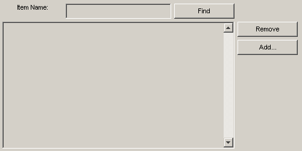

Creating a Resizable Figure
Simple example which uses the features of resizable_figure and resizeable_layout. When the figure is resized, the edit control and the list control will expand to fill the available space.
Contents
Create figure
Creates the figure and the layout manager.
f = resizable_figure('Find In List');
Create controls
These are normal MATLAB controls. Specify the parent figure for safety.
label = uicontrol('parent',f,'style','text','string','Item Name:'); list = uicontrol('parent',f,'style','listbox'); editctrl = uicontrol('parent',f,'style','edit','horizontalalignment','left'); find = uicontrol('parent',f,'style','pushbutton','string','Find'); remove = uicontrol('parent',f,'style','pushbutton','string','Remove'); add = uicontrol('parent',f,'style','pushbutton','string','Add...');
Create element matrix and apply it
The elements which are to span more than one row or column must appear at the top-left of their range.
elements = {...
label, editctrl, [], find, [];...
list, [], [], [], remove;...
[], [], [], [], add;...
[], [], [], [], [];...
};
f.UserData = setelements(f.UserData,elements);
Define a matrix of "mergeblocks" and apply it
For each element which is to span more than one cell, we specify the range of rows and the range of columns which is to occupy. Each row in the "mergeblocks" matrix specifies the location of a different control, and the columns in the matrix are: row_min, row_max, column_min, column_max.
mergeblocks = [... 1 1 2 3;... % edit control (first row, columns 2 & 3) 2 4 1 4;... % list control (rows 2 through 4, columns 1 through 4) ]; f.UserData = setmergeblocks(f.UserData,mergeblocks);
Set sizes for rows, columns, spacing and borders
Row and column sizes first. Negative numbers indicate resizable rows or columns. The available space in each direction is shared according to the ratio of the numbers, so the absolute values are irrelevant. In this case, the bottom row and middle column are resizable.
rowsizes = [ 25, 25, 25, -1 ]; colsizes = [ 100, 100, -1, 100, 100 ]; % (rows first, then columns) f.UserData = setsizes(f.UserData,rowsizes,colsizes); % Set the spacing between controls (X, Y) f.UserData = setspacing(f.UserData,5, 5); % Set the border between the edge of the figure and the first control (X, Y) f.UserData = setpadding(f.UserData,5, 5);
Position figure in middle of screen and set its size
If there was a "parent" figure, we would supply its handle first, and this figure would be centred on it. In this case the figure will be positioned in the middle of the screen.
centrefigure([],f,[500,250] );
Show the figure
f.Visible = 'on';
